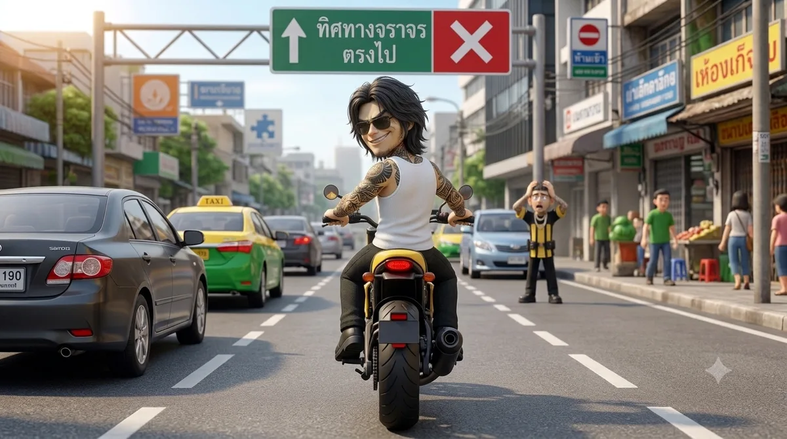

คำถาม 1/3เหตุเกิดบนถนนเมืองสันติสุขคดีซิ่งผิดทิศ!
🚦 กฎหมายจราจรทางบกตอบถูก +10 คะแนน
“พี่ซิ่ง” ขี่รถจักรยานยนต์ย้อนศร ไม่สวมหมวก และไม่มีใบขับขี่ ผิดกฎหมายกี่เรื่อง?
พยานให้การว่า: ผู้ขับขี่ตั้งใจย้อนศรเพราะทางลัดใกล้กว่า สวมเพียงเสื้อกล้าม และยอมรับว่ายังไม่เคยสอบใบอนุญาตขับรถ